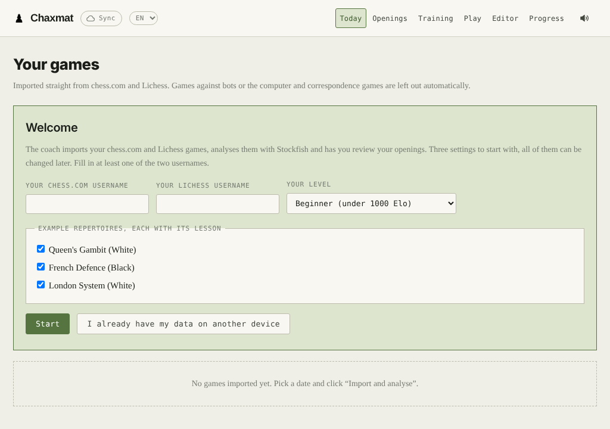
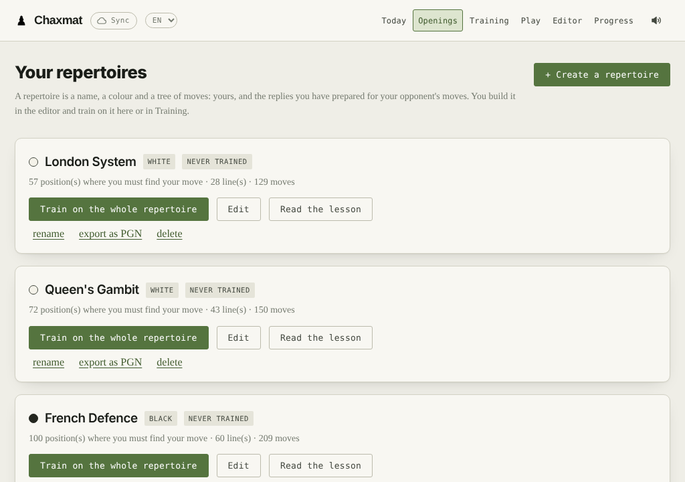
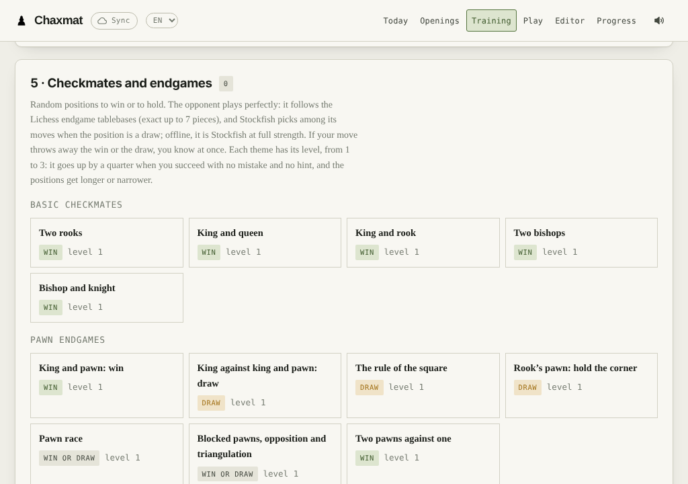

Your games, analysed
Imports your chess.com and Lichess games and analyses them with Stockfish in the browser. Every move is explained in words: the piece left hanging, the missed fork, the move you should have played.
Free, open-source chess trainer · desktop and Android
Chaxmat imports your chess.com and Lichess games, analyses them with Stockfish and explains every move. It drills your openings, lets you play a bot at your level, and trains checkmates and endgames. Everything runs on your machine: no account, no subscription, no ads.
GPL v3 licence · English and French · updates offered at launch

Six tools, all built on your own games.
Imports your chess.com and Lichess games and analyses them with Stockfish in the browser. Every move is explained in words: the piece left hanging, the missed fork, the move you should have played.
A repertoire editor with the moves played on Lichess, your own, and Stockfish's. Three example repertoires with full lessons: Queen's Gambit, French Defence, London System.
Type what you want to work on, "the French Defence" or "forks". The bot blunders as often as a player of your rating, and leaves you tactical chances to find.
A small neural network learns from your games how your opponents pick their moves: what tempts them, what they miss, when they blunder. Then it plays like them.
35 themes, from king and rook mate to the Lucena position, drawn at random, to win or hold against the perfect play of the Lichess tablebases, or Stockfish offline.
Nothing goes to a server: your games stay on your machine. Sync between computer and phone goes, if you want it, through your own private GitHub repository.


Free, no account. New versions are offered when the app starts.
You need Python 3.7 or later and a recent browser. Get the app with git:
git clone https://github.com/AMAURYCU/chaxmat.gitor download the "Source code" ZIP of the latest release. Then start it:
| macOS | double-click entraineur/Ouvrir l'entraineur.command |
| Windows | double-click entraineur/ouvrir-entraineur.bat |
| Linux | entraineur/ouvrir-entraineur.sh |
Why "Chaxmat"? From the Russian shakh i mat, "checkmate", which like the English word comes from the Persian shāh māt.